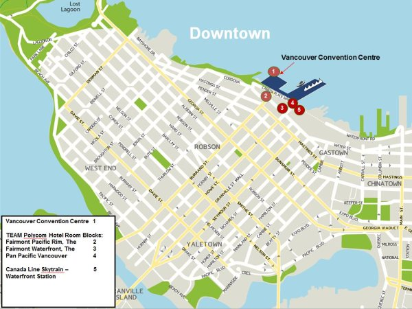

- Scroll Down for More Exciting Information on TEAM Polycom!

A TEAM Polycom Registration Help Line is in place to assist you with any questions you have concerning the registration process or accommodation. This support function can be contacted at +1 (800) 483-2970 (US or Canada) or +1 (971) 223-0773 (international) Monday to Thursday from 6:00 a.m. to 5:00 p.m. and Friday from 6:00 a.m. to 3:00 p.m. U.S. Pacific Time zone, or email registration@TEAMpolycom2014.com.
Polycom Employees, please refer to the Employee FAQ page regarding company travel policies.
TEAM Polycom, based on your feedback, is the top partner summit in our industry. In 2014 we are establishing a Global Delegate fee that is consistent across theatres and represents an equitable approach to participants. This is in recognition of our Partners commitment to attend this key event and contribution to its success. To achieve this global price, Polycom is using Joint Marketing Funds to subsidize the difference between the event cost and the partner delegate fees below. You will observe the delegate fee for TEAM Polycom 2014 is lower than the delegate fee in 2013.
The Conference Delegate fee includes all conference materials, breakfasts, lunches, dinners and entertainment at our special evening events. Partners are responsible for covering all other expenses associated with conference attendance, including air travel, hotel accommodation, personal recreational activities, evening guest passes and any additional transportation. If using a credit card when you register, your card will be charged upon submission of your registration.
Regular Delegate Fee (December 18, 2013 - January 7, 2014): USD$1,550
Please engage with your Channel Account Manager if you have any questions regarding the delegate fees.
IMPORTANT! Please Note: For Partners who choose to pay by check or wire transfer, the payment must be received within 14 days of registration and prior to January 7, 2014. If payments aren’t received by the registration closure date, you will risk registration cancellation.
All payment must be sent to the address listed below. Please be sure to include your name or the name of the registered attendee you are paying for on the check or money wire to ensure the payment is credited properly.
Opus Events Agency
c/o Accounts Receivable
9309 SW Nimbus Ave
Beaverton, OR 97008
USA
The deadline for Polycom Employees to register for the conference is Tuesday, January 7, 2014 by 5:00pm Pacific Time.
The deadline for Polycom Partners to register for the conference is Tuesday, January 7, 2014 by 5:00pm Pacific Time.
After the final deadline, all hotel rooms will be offered based on availability and prevailing rates.
Immediately upon submission you will receive a registration confirmation email. Please keep a copy for your records. You will be able to access your registration details and make changes by using the link on your registration confirmation email.
By Friday, January 17, 2014, you will receive a final confirmation email that will include your hotel reservation confirmation number.
Agenda Builder Live! You can now create your personalized TEAM Polycom 2014 Conference agenda. Click here to access the TEAM Polycom 2014 agenda builder.
Agenda Builder is only available to those who register. All registrants will be notified via email with instructions on how to access the agenda builder.
Cancellation of a hotel room reservation after the registration deadline dates may result in a charge to your credit card equal to one night’s accommodation fee plus tax.
To avoid a cancellation fee, cancellations must be submitted in writing via email and received by Tuesday, January 7, 2014 at 3:00pm PST. Confirmed registrants who cancel after Tuesday, January 7 by 3:00pm PST, or do not attend will be charged the full conference amount. Attendees are welcome to send a substitute attendee at no additional charge if they forward Polycom written notification no later than Friday, January 17, 2014. Conference Delegate Fees may be refunded if proof of visa rejection or serious medical issue is sent to registration@TEAMpolycom2014.com by Friday, February 17, 2014 by 5:00pm PST.
If you need to cancel your conference registration or hotel room reservation, please contact our Conference Registration Department via email at registration@TEAMpolycom2014.com. All cancellations must be received in writing. We will process BOTH your conference registration cancellation and hotel room reservation cancellations; however, we will not cancel any of your travel arrangements; you must do that separately.
Please do not call the hotel directly to make any changes or cancellations to your reservations.
Polycom Employees, please refer to the Employee FAQ page regarding company travel, accommodation and expense policies.
Attendees may pick up their conference badge and materials at the Polycom Conference Registration Desk in the Vancouver Convention Centre. Opening times will be sent to you in your final confirmation email, along with your hotel confirmation number.
MEETINGS: BUSINESS CASUAL
Welcome Reception (Tuesday, February 11): Smart Casual
Partner Awards Dinner (Wednesday, February 12): Semiformal, including jacket and tie
Country & Theatre Awards Luncheon (Thursday, February 13): Smart Casual
Business Casual = Business attire; dress pants, skirts, dresses, collared shirt, perhaps a suit jacket, no tie for men.
Smart Casual = Neat yet informal attire; a combination of collared shirts (perhaps a tennis shirt instead of a dress shirt), cotton trousers (such as khakis), blazers, sweaters, and dresses.
Semiformal = Full suits, ties, button down shirts, dresses, skirts, pantsuits.
The Vancouver Convention Centre is well known for its fine cuisine, and meals will be provided throughout the conference. If you have specific dietary requirements related to food restrictions, religion or allergies, please note them in the space provided on the registration form. The deadline for registering special dietary requirements is Tuesday, January 7, 2014, for Polycom Employees and Tuesday, January 7 for Partners, in line with the conference registration deadlines. Special requirements registered after these dates cannot be guaranteed.
Conference badges will identify attendees who have notified us of special dietary requirements.
Guests of our partners are welcome to attend the evening event on Wednesday, February 12. There is a guest fee of $150 USD for the February 12th evening event
International Travel
As of January 23, 2007, a passport is required for travel to or from Canada.
Not Sure if You Need a Visa for Your Destination?
Please click here for a list of countries that require a visa for entrance into Canada.
Each country has different passport/visa requirements. We suggest you contact your local consulate or embassy to inquire whether a passport and/or visa would be required for travel.
In the event you register to qualify for the Early Bird Delegate Fee but then are unable to get a visa, we will refund that registration upon receipt of the decline.
If you need an invite letter in order to apply for a Visa, please contact Amy Drotar amy.drotar@polycom.com with your name as it is listed on your passport, your passport number and country of issue, birthdate, job title and dates requested for Vancouver.
Vancouver Airport Information:
The recommended airport to fly into for the conference is Vancouver International Airport. It is located on Sea Island in Richmond, British Columbia, Canada, about 7.5 miles or 12 kilometers from downtown Vancouver, the Vancouver Convention Centre and event hotels.
Vancouver International Airport (YVR)
3211 Grant McConachie Way
Richmond, BC V7B1Y7 Canada
Airport Transportation during Conference Dates:
Polycom will arrange complimentary airport shuttle transportation from Vancouver International Airport for international and domestic arrivals on Monday, February 10, and Tuesday, February 11. For departures, Polycom will arrange complimentary airport shuttle service from the Vancouver Convention Centre to Vancouver International Airport on Thursday, February 13, and Friday, February 14. Shuttles will run from 6pm to 10pm on Thursday, February 13 and from 7am to 8pm on Friday, February 14.
For international arrivals, please proceed to the Polycom airport booth once you have cleared customs and collected your bags. The booth will be located outside of the Customs area. For domestic arrivals, you will be met by Polycom airport staff in the baggage claim area. The staff will escort you to the shuttle service location in the international terminal.
Note: Because you are responsible for booking your own flights, we will need to have your flight information in order to make airport shuttle arrangements for you.
If you have already booked your flights, please enter your flight information during registration. If you have not yet booked your flights and will do so after registering, email your flight information to registration@TEAMpolycom2014.com or submit a "Change Registration Form" on the registration website.
Airport Transportation outside Conference Dates: Attendees arriving or departing outside of program dates will be responsible for the arrangement and expense of their own transportation to and from the conference.
Taxis from Vancouver International Airport: Taxis are available 24 hours a day, seven days a week. The fare to downtown Vancouver is approximately CAD$30 - $32 (taxes included). Transfer time from the airport to downtown hotels is approximately 20-25 minutes.
Arriving from Canada on a domestic flight?
Make your way outside of the terminal on Level 2 to the taxi stand.
Arriving from the U.S. or another international destination?
Once through the customs and immigration process, you’ll enter the International Arrivals Greeting Area. Walk outside the building on the same level and look for the taxi stand.
Recommended! Trains from Vancouver International Airport:
The Canada Line SkyTrain offers transportation from the airport to Waterfront Station, which is within walking distance of the Vancouver Convention Centre and the conference hotels. Travel time from the airport to Waterfront Station is 25 minutes. The fare is CAD$8.75. Fare machines accept Canadian currency (and give change), as well as debit cards, Visa and MasterCard.
Vancouver International Airport to Waterfront Station
The first train departs the airport for Waterfront Station at 5:10 a.m. and the last train departs the airport for Waterfront Station at 12:57 a.m. The train runs every 12 minutes in the early morning and evenings, every 8 minutes mid-day and during weekend peak hours, and every 20 minutes in the late evening.
Waterfront Station to Vancouver International Airport
The first train departs Waterfront Station for the airport at 4:50 a.m. and the last train departs Waterford Station for the airport at 1:05 a.m. The train runs every 12 minutes in the early morning and evenings, every 8 minutes mid-day and during weekend peak hours, and every 20 minutes in the late evening.
For additional airport transportation options, please visit the transportation page of the Vancouver International Airport.
Do I Need to Book My Hotel Directly with the Hotel or Through My Travel Agent?
Partners: No. If you click "Hotel Accommodation Required" when you register, your hotel accommodation will automatically be booked for you. This is the only way to get the deeply discounted rates available to attendees. TEAM Polycom attendees will stay at one of three hotels. We have secured specially negotiated rates at each hotel. We encourage you to register early to guarantee your preferred choice. Polycom has blocked rooms and they will be allocated on a first-come, first-served basis. Once the room blocks are full, we may not be able to offer your preferred choice. To guarantee the special conference rate, your room request must be received by Tuesday, January 7, 2014. After this date, any available rooms will be based upon hotel and rate availability.
Polycom Employees: Once you have completed the online registration and clicked "Hotel Accommodation Required," Polycom will automatically make your room reservation for you. A final confirmation email confirming the hotel that you will be staying in (hotel detail, check-in and checkout dates plus any special requests) and your hotel confirmation number will be sent by Friday, January 17, 2014.
Confirmations
You will receive a final confirmation email that will include your hotel reservation confirmation number by Friday, January 17, 2014.
Secured Rates
To guarantee the special conference rate, your room request must be received by Tuesday, January 7, 2014, for Polycom Employees and Tuesday, January 7, for Partners. After these dates, any available rooms will be based upon hotel and rate availability.

999 Canada Place #300
Vancouver, BCV6C 3B5, Canada
+1 (604) 662-8111
For our Partners who wish to stay at the Pan Pacific Hotel Vancouver, Polycom has secured a conference rate of CAD$179 per night, plus 16.5% in taxes and fees, for single or double occupancy. This rate includes high-speed Internet access in your guest room. Note: The conference will take place at the Vancouver Convention Centre. It takes less than two minutes to walk from the Pan Pacific Hotel Vancouver to the Vancouver Convention Centre.
900 Canada Place Way
Vancouver, BCV6C 3L5, Canada
+1 (604) 691-1991
For our Partners who wish to stay at The Fairmont Waterfront Hotel, Vancouver, Polycom has secured a conference rate of CAD$179 per night, plus 16.5% in taxes and fees, for single or double occupancy. This rate includes high-speed Internet access in your guest room. Note: The conference will take place at the Vancouver Convention Centre. It takes less than two minutes to walk from The Fairmont Waterfront Hotel to the Vancouver Convention Centre.
PLEASE NOTE: The Lobby Restaurant and Bar at the Fairmont Waterfront will be under renovation during our program dates. Should you be arriving pre or staying post TEAM Polycom dates, the hotel will provide meal service in the Fairmont Ballroom and through in room dining.
For our Partners who wish to stay at The Fairmont Pacific Rim Hotel, Vancouver, Polycom has secured a conference rate of CAD$199 per night, plus 16.5% in taxes and fees, for single or double occupancy. This rate includes high-speed Internet access in your guest room. Note: The conference will take place at the Vancouver Convention Centre. It takes less than two minutes to walk from The Fairmont Pacific Rim Hotel, Vancouver to the Vancouver Convention Centre.
For our Partners who wish to stay at Vancouver Marriott Pinnacle Downtown Hotel, Polycom has secured a conference rate of CAD$169 per night, plus 16.5% in taxes and fees, for single or double occupancy. This rate includes high-speed Internet access in your guest room. Note: The conference will take place at the Vancouver Convention Centre. It takes less than five minutes to walk from the Vancouver Marriott Pinnacle Downtown Hotel to the Vancouver Convention Centre.
Polycom rates will be honored for three days prior to and three days following the conference dates, based on availability, and on a first-come, first-served basis.
Both Partner and Polycom reservations that must be guaranteed with a credit card. Three weeks prior to the conference, you will receive a confirmation email that will include your hotel reservation confirmation number.
Incidentals
Attendees are responsible for verifying and settling their final room bill prior to checkout. Attendees are responsible for resolving any billing issues directly with the hotel.
Can I Share Accommodations?
Yes. Partners can select a "Roommate Preference" during registration. We will do our best to accommodate all roommate preferences. Please Note: Both you and your preferred roommate must register and choose the same hotel and dates.
What's the Weather Like?
The average low in early February is 35oF / 5oC and the average high is 50oF/ 10oC. To receive an up-to-date forecast for Vancouver weather conditions, please visit www.weather.com.
What's Going on Around Town?
Visit www.tourismvancouver.com for information on events and activities in the Vancouver area during your stay. Toursim Vancouver will have a kiosk onsite during TEAM Polycom to assist attendees with these services, if needed
Currency
The official currency of Canada is the Canadian dollar (CAD).Currency exchange services are available at points of entry and throughout the city at financial institutions; in addition, U.S. currency is accepted at most places in the Vancouver area. Please note: If you pay in USD, you will receive change in the local currency, CAD.
Language
While Canada has two official languages—French and English—English is the predominant language in the west. Multilingual staff are commonly found in major tourism and business facilities.
Electricity
Electricity in Canada is 110-volt AC (alternating current), the same as in the U.S. and other North American countries.
Time Zone
The time zone in Vancouver is Pacific time zone: GMT -8.
Cell phone information for Polycom employees can be found on the Employee FAQ page.
Conference Registration Services
If you have any questions regarding the conference, this website or the registration process, please email registration@TEAMpolycom2014.com or call +1 (800) 483-2970 (domestic), +1 (971) 223-0773 (international).
For North America and Canada, contact:
Partners: Joanne Poggi at joanne.poggi@polycom.com or via phone at +1 (408) 474-2839
Polycom Employees: Sue McCarty at sue.mccarty@polycom.com or via phone at +1 (703) 793-2139
For Europe, Middle East and Africa (EMEA), contact:
Partners: Jo-Anne Handley at jo-anne.handley@polycom.com or via phone at +44.7780.006344
Polycom Employees: Lucie Cuthbert at lucie.cuthbert@polycom.com or via phone at +44.1753.723017
For Asia Pacific and Japan, contact:
Partners: Christina Tan at christina.tan@polycom.com or via phone at +65.6389.9118
Polycom Employees: Maria Ong at maria.ong@polycom.com or via phone at +65.6389.9258
For Greater China Region, contact:
Partners: Stacy Hou at stacy.hou@polycom.com or via phone at +86.10.85884814
Polycom Employees: Anny Chen at anny.chen@polycom.com or via phone at +86.10.85884850
For Latin America and Caribbean, contact:
Partners and Polycom Employees: Mariane Takahashi at mariane.takahashi@polycom.com or via phone at +55.11.9188.4538
For Global Services, contact:
Polycom Employees: Chris Dickerson at christopher.dickerson@polycom.com or via phone at +1 (408) 474-2267